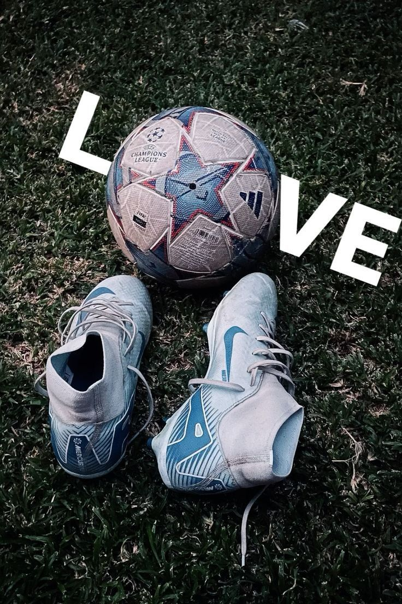

Le Football
Histoire du Football
Le football est l’un des sports les plus populaires au monde. Ses origines remontent à plusieurs siècles, avec des jeux de balle pratiqués dans différentes civilisations. La version moderne du football est née en Angleterre au XIXᵉ siècle, où les premières règles officielles ont été établies. En 1863, la Football Association est créée et fixe les bases du jeu que nous connaissons aujourd’hui. Depuis, le football s’est rapidement répandu dans tous les continents et est devenu un sport universel. Aujourd’hui, il rassemble des millions de joueurs et des milliards de supporters à travers le monde.

Origines
Le football moderne est né au 19ème siècle en Angleterre, mais ses racines remontent à des jeux de balle antiques.

Fédération
La FIFA, créée en 1904, régit le football mondial et organise la Coupe du Monde.
Règles du Jeu
Le football oppose deux équipes de onze joueurs sur un terrain rectangulaire avec un but de chaque côté. L’objectif du jeu est de marquer plus de buts que l’équipe adverse en envoyant le ballon dans le but. Les joueurs utilisent principalement leurs pieds pour contrôler et passer le ballon. Seul le gardien de but peut utiliser ses mains, mais uniquement dans sa surface de réparation. Un match se joue généralement en deux mi-temps de 45 minutes. L’arbitre veille au respect des règles et peut sanctionner les fautes avec des cartons jaunes ou rouges.
.jpg)
Terrain et Joueurs
Un match se joue sur un terrain rectangulaire avec deux équipes de 11 joueurs chacune.

Objectif
Marquer des buts dans le camp adverse tout en respectant les règles du jeu.
Tenues et Équipement
Les joueurs de football portent une tenue adaptée pour jouer confortablement et en toute sécurité. Cette tenue comprend généralement un maillot, un short, des chaussettes longues et des chaussures spéciales appelées crampons. Les protège-tibias sont obligatoires pour protéger les jambes contre les chocs pendant le match. Le gardien de but porte souvent un maillot différent pour être facilement identifiable sur le terrain. Le ballon de football est rond et conçu pour être contrôlé facilement avec les pieds. Tous ces équipements permettent aux joueurs de pratiquer le football dans de bonnes conditions.
Chaussures
Les crampons permettent une meilleure adhérence sur le terrain.

Maillots
Chaque équipe porte des couleurs distinctes avec un numéro pour chaque joueur.